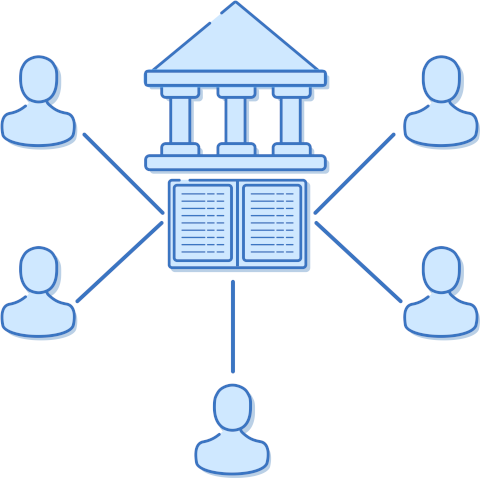
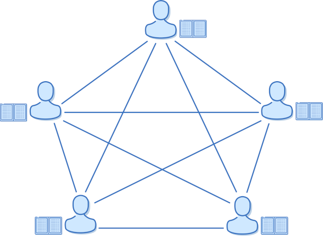

2 De tussenpersoon verwijderen
In het vorige hoofdstuk hebben we besproken dat bitcoin een peer-to-peer systeem is voor de overdracht van waarde. Voordat we ingaan op hoe dat werkt, kijken we eerst hoe een traditionele bank of betalingsverwerker omgaat met het beheer van eigendom en overdrachten van activa.
Banken zijn slechts grootboeken
Hoe werkt een digitale betaling via de bank, PayPal of ApplePay? Heel eenvoudig, fungeren deze tussenpersonen als veredelde grootboeken van rekeningen en overschrijvingen.
Het doel van een bank is om tegoeden op te slaan en te bewaken. Maar tegoeden zijn tegenwoordig voornamelijk elektronisch, in plaats van munten of papier. Als zodanig is het nu de taak van een bank om data te beheren en te bewaken. Omdat de gegevens elektronisch zijn, is de beveiliging ook voornamelijk elektronisch. Banken maken gebruik van softwarematige inbraakdetectiesystemen, back-ups om te beschermen tegen gegevensverlies, audits door derden om er zeker van te zijn dat interne processen niet in het gedrang komen en ze verzekeren zich uit voorzorg voor het geval er iets misgaat.
Hieronder zie je hoe banken werken. In dit voorbeeld hebben we het over een bank, maar je kan dit lezen als elke partij die betalingen verwerkt. We beginnen met een grootboek van rekeningen waaruit blijkt dat Alice en Bob geld hebben gestort bij de bank.
TABEL
Wanneer Alice €2 naar Bob wil sturen, belt ze haar bank of gebruikt ze een website of mobiele app van haar bank, logt ze in bij de bank met behulp van een gebruikersnaam en wachtwoord of pincode, en doet vervolgens het verzoek tot overdracht. De bank registreert dit in hun grootboek.
TABEL
De bank heeft de credits en debets en bijbehorende tegoeden geregistreerd, en nu is het geld overgedragen.
Het dubbele-uitgavenprobleem
Wat gebeurt er als Alice diezelfde twee dollar nu weer probeert uit te geven? Dit wordt het dubbele-uitgavenprobleem genoemd. Zij dient het verzoek in bij de bank, maar de bank zegt: "Sorry, we zien dat je die €2 al hebt uitgegeven aan Bob. Je kan dat geld niet meer uitgeven."
Wanneer je een centrale autoriteit hebt zoals een bank, is het heel gemakkelijk voor de bank om te zien dat je probeert geld uit te geven dat je al hebt uitgegeven. Dat komt omdat zij de enigen zijn die het grootboek kunnen wijzigen. Zij beschikken over verschillende interne processen zoals back-ups en audits, om ervoor te zorgen dat het grootboek correct is en om te zorgen dat er niet mee wordt geknoeid.
We noemen dit een gecentraliseerd systeem omdat het een enkel controlepunt heeft.

Het grootboek delen tussen verschillende partijen
Het eerste probleem dat bitcoin wil oplossen, is het verwijderen van een tussenpersoon door het creëren van een peer-to-peer systeem. Stel je voor dat banken verdwenen zijn en we ons financiële systeem opnieuw moeten creëren. Hoe kunnen we een grootboek bijhouden zonder centrale partij?
Als we niet één centraal grootboek hebben, moet het zo zijn dat het grootboek van het volk is. Vive la révolution. Dit is hoe we dat doen.
Eerst komen een aantal mensen samen en creëren zij een netwerk. Dit betekent simpelweg dat een manier bestaat om informatie met elkaar te delen. Laten we zeggen dat we telefoonnummers of Snapchat-accounts uitwisselen. Wanneer Alice geld wil overmaken naar Bob, belt ze niet naar de bank, maar zegt ze tegen al haar vrienden: Ik stuur €2 naar Bob. Iedereen bevestigt met: Top, we noteren het, en schrijft het in hun eigen kopie van het grootboek. Het ziet er uit zoals in Figure 2.1.

Dus nu heeft iedereen (in plaats van enkel de bank) een kopie van het grootboek in handen. Telkens wanneer iemand geld wil uitgeven, vertellen ze het aan al hun vrienden. Iedereen houdt de transacties bij. Het grootboek staat niet meer op één plek. Dit heet gedistribueerd. We noemen we het ook decentraal, omdat geen enkele centrale partij het voor het zeggen heeft. Er hoeft geen tussenpersoon meer vertrouwd te worden.
Nu we geen tussenpersoon hebben, hoe gaan we dan om met dubbele uitgaven? Wie of wat kunnen we (in plaats van de bank) raadplegen om na te gaan of het geld dat wordt uitgegeven nog niet is uitgegeven? Omdat iedereen een kopie van het grootboek heeft, moeten we iedereen raadplegen. Het systeem zoals we nu bespreken, is gebaseerd op consensus omdat er in het netwerk consensus heerst. Iedereen is het eens over een bepaalde versie van de waarheid.
Als Alice probeert om de €2 die ze al naar Bob heeft gestuurd opnieuw uit te geven, zal haar transactie worden afgewezen door iedereen op het netwerk. De leden op het netwerk zullen hun grootboeken raadplegen en aan Alice vertellen dat het geld al is uitgegeven. Ze zouden haar tweede transactie van diezelfde €2 dus niet opnemen. We hebben nu een peer-to-peer consensusnetwerk voor het registreren van eigendom en overdrachten van tegoeden.
Zolang partijen toestemming nodig hebben om deel te mogen nemen aan ons gedistribueerde grootboek, en we erop kunnen vertrouwen dat elke partij eerlijk is, werkt het systeem. Maar dit soort ontwerpen kunnen niet geschaald worden om door miljoenen mensen van over de hele wereld te worden gebruikt. Gedistribueerde systemen bestaande uit willekeurige deelnemers zijn inherent onbetrouwbaar. Sommige mensen gaan af en toe offline. Dat betekent dat ze mogelijk niet op de hoogte zijn van onze transacties op het moment dat we die uitsturen. Anderen proberen ons misschien actief te bedriegen door te zeggen dat bepaalde transacties juist wel of niet hebben plaatsgevonden. Nieuwe mensen kunnen zich aansluiten bij het netwerk en zo ontstaan conflicterende kopieën van het grootboek.
In het volgende deel onderzoeken we hoe iemand zou kunnen proberen om vals te spelen.
De dubbele-uitgaven aanval
Als ik Alice ben, kan ik samenspannen met een aantal van de andere mensen en hen vertellen: Als ik geld uitgeef, schrijf het dan niet in jullie grootboek. Doe alsof het nooit gebeurd is. Laten we eens kijken hoe Alice zo’n dubbele-uitgaven aanval kan uitvoeren.
Beginnend met een saldo van €2, doet Alice het volgende:
Ze stuurt haar €2 naar Bob, om een reep chocolade te kopen. Nu heeft Alice €0 over.
David, Eva en Femke spannen samen met Alice en schrijven de transactie van Alice naar Bob niet in hun grootboeken. In hun exemplaar heeft Alice haar geld nooit uitgegeven en heeft ze nog steeds een saldo van €2.
Charlotte is een eerlijke grootboekhouder. Ze registreert correct de transactie van Alice naar Bob. In haar grootboek heeft Alice €0.
Henri was een week op vakantie en heeft nog nooit van de transactie gehoord. Hij sluit zich aan bij het netwerk en vraagt om een kopie van het grootboek.
Henri krijgt 4 valse kopieën (David, Eva, Femke en Alice) en één eerlijke kopie (Charlotte). Hoe bepaalt hij welke echt is? Zonder beter systeem vertrouwt hij de meerderheid van deelnemers en wordt dus misleidt. Hij neemt aan dat het nep-grootboek klopt.
Alice koopt een chocoladereep van Henri met de €2 die ze eigenlijk niet heeft. Henri accepteert het omdat voor zo ver hij weet, Alice nog steeds €2 op haar rekening heeft.
Alice heeft nu 2 chocoladerepen en er is €4 aan nepgeld gemaakt in het systeem. Ze betaalt haar vrienden met chocoladerepen, en ze herhalen de aanval 100 keer op elke nieuwe persoon die lid wordt van het netwerk.
Alice heeft nu alle chocoladerepen en alle anderen hebben grote zakken nepgeld gekregen.
Wanneer de verkopers van chocoladerepen het geld willen uitgeven dat Alice ze heeft gestuurd zullen Alice, David, Eva en Femke (die de meerderheid van de netwerk uitmaken) deze uitgaven afwijzen omdat ze weten dat het nepgeld is.
Dit wordt een consensusfout genoemd. De mensen in het netwerk kwamen niet tot consensus over de stand van zaken. Doordat er geen beter systeem voor handen was, werd de meerderheidsregel gehanteerd, wat er voor zorgde dat oneerlijke mensen het netwerk konden bedotten en geld konden uitgeven dat ze eigenlijk niet hadden.
Als we een systeem willen maken dat zonder toestemming werkt, waar iedereen aan kan deelnemen zonder iemand permissie te moeten vragen, dan moet het weerbaar zijn tegen oneerlijke deelnemers.
Het oplossen van het gedistribueerd consensus probleem
Nu komen we bij een van de moeilijkste problemen in de technologie: consensus delen tussen partijen waar sommige oneerlijk of onbetrouwbaar zijn. Dit probleem staat bekend als het probleem van de Byzantijnse Generalen en de oplossing bleek de sleutel tot succes van Satoshi Nakamoto’s ontdekking. Een heleboel mensen moeten het eens worden over de transacties in het grootboek zonder te weten welke grootboekhouders alle transacties correct en eerlijk hebben opgeschreven.
Een naïeve oplossing is simpelweg het aanstellen van eerlijke grootboekhouders. In plaats van iedereen het grootboek laten bijhouden, kiezen we een handvol vrienden zoals Charlotte, Geert, Frank en Zoe om het te doen, omdat ze geen leugens vertellen en iedereen weet dat ze nooit feesten in het weekend.
Dus telkens we een transactie willen verwerken, bellen we Charlotte en de rest op. Ze zijn blij om het grootboek voor ons bij te houden en vragen slechts een kleine vergoeding. Nadat zij de transactie in het grootboek hebben geschreven, bellen ze de anderen om ze op de hoogte te brengen van de wijziging, waarna ook zij die aan het grootboek toevoegen als back-up.
Dit systeem werkt heel goed, tot op een dag agenten willen weten wie dit schaduw financiële systeem draaiende houdt. Ze arresteren Charlotte, Geert, Frank en Zoe en nemen hen mee, waardoor een einde komt aan ons gedistribueerde grootboek. We hebben allemaal verschillende back-ups, kunnen elkaar niet vertrouwen en kunnen niet achterhalen wiens back-up moet worden gebruikt om een nieuw systeem te starten.
In plaats van een volledige sluiting, zou de overheid onze grootboekhouders ook stilletjes met gevangenisstraffen kunnen bedreigen als ze transacties naar Alice accepteren (die verdacht wordt van het verkopen van drugs). Het systeem is nu effectief onder centrale controle en we kunnen het niet langer noemen.
Wat als we democratie proberen? Laten we een groep van 50 eerlijke mensen zoeken en we houden dagelijks verkiezingen om te bepalen wie die dag het grootboek bij mag houden. Iedereen in het netwerk krijgt een stem.
Dit systeem werkt geweldig totdat mensen geweld of financiële dwang gebruiken om dezelfde doelen te bereiken als voorheen:
Dwing het electoraat om te stemmen op de grootboekhouders van hun keuze.
Dwing de gekozen grootboekhouders om valse vermeldingen in het grootboek te verwerken of juist bepaalde transacties tegen te houden.
We hebben een probleem. Telkens wanneer we specifieke mensen aanstellen om het grootboek bij te houden, moeten we erop vertrouwen dat ze eerlijk handelen. Er is geen enkele manier om hen te verdedigen tegen dwang om oneerlijk te handelen en het grootboek te corrumperen.
Valse identiteit en Sybil-aanvallen
Tot nu toe hebben we twee mislukte methoden gezien om eerlijkheid te garanderen: de een maakte gebruik van specifieke grootboekhouders en de ander van democratisch gekozen en roterende grootboekhouders. De zwakte van beide systemen is dat het vertrouwen gekoppeld is aan identiteiten uit de reële wereld: er moeten personen worden aangewezen die verantwoordelijk zijn voor het grootboek. Wanneer we een systeem hanteren waar vertrouwen afhankelijk is van identiteit, lopen we kans op een zogeheten Sybil-aanval. Dit is eigenlijk een mooie naam voor imitatie. Het houdt in dat iemand zich voordoet als een ander en is vernoemd naar een vrouw met een meervoudige persoonlijkheidsstoornis.
Heb je ooit een rare SMS ontvangen van een van je vrienden, waarna bleek dat zijn telefoon(nummer) was gehackt? Als het om miljarden of zelfs biljoenen dollars gaat, zullen mensen allerlei vormen van geweld rechtvaardigen om die telefoon te stelen en die SMS te versturen. Het is absoluut noodzakelijk dat we voorkomen dat de mensen die het grootboek bijhouden, op welke manier dan ook, tot zaken gedwongen kunnen worden. Maar hoe doen we dat?
We starten een loterij
Als we niet willen dat mensen worden beïnvloed door dreigementen met geweld of omkoping, hebben we een systeem nodig met zoveel grootboekhouders dat het onhaalbaar is om ze te dwingen. Of nog beter; we willen dat hun identiteit geheim blijft. Het moet zo zijn dat iedereen aan ons systeem kan deelnemen en dat we niet afhankelijk zijn van een vorm van stemmen, omdat zo’n systeem gevoelig is voor omkoping of afpersing.
Wat als we een loterij gebruiken waarbij telkens een willekeurige persoon wordt gekozen om in het grootboek te schrijven? Hier is het eerste ontwerp:
Iedereen ter wereld kan meedoen. Tienduizenden mensen kunnen lid worden van de grootboekhouderloterij.
Wanneer we geld willen overmaken vertellen we het gehele netwerk over de transacties die we willen uitvoeren, net zoals we hiervoor deden.
In plaats van iedereen de transacties te laten opschrijven, houden we een loterij om te zien wie het recht wint om de transacties in het grootboek te schrijven.
Wanneer we een winnaar selecteren, mag die persoon alle transacties in het grootboek schrijven die bij hem bekend zijn.
Als de persoon geldige transacties in het grootboek schrijft, die voldoen aan de regels zoals deze door alle deelnemers zijn opgelegd, krijgen ze een vergoeding.
Iedereen houdt een kopie van het grootboek bij en voegt de transacties toe die door de laatste loterijwinnaar zijn opgeschreven.
We wachten een tijdje zodat de meeste mensen tijd hebben om hun grootboek bij te werken, om vervolgens de loterij opnieuw uit te voeren.
Dit systeem is een verbetering. Het is onmogelijk om te weten wie de deelnemers zijn en wie de volgende winnaar zal zijn, waardoor deze methode ongevoelig is voor afpersing.
We hebben echter nog geen duidelijk antwoord op de vraag hoe we deze loterij kunnen uitvoeren zonder dat iemand de leiding heeft, of waarom we erop zouden vertrouwen dat de winnaar eerlijk gaat handelen bij het schrijven in het grootboek. In het volgende hoofdstuk zien we hoe we dat kunnen oplossen.